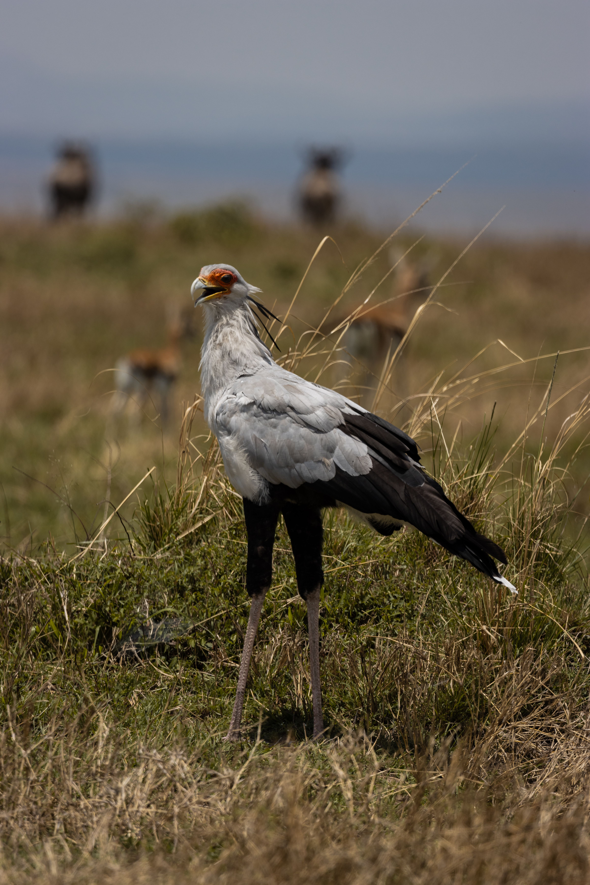

The Secretarybird is a remarkable African terrestrial bird of prey with extremely long legs, a crest of elongated black feathers and a powerful hooked bill. Unlike most raptors, it spends much of its time walking through open grassland while searching for prey. It is particularly famous for using powerful kicks to subdue snakes and other animals.
Secretarybird is best separated from Bateleur by looking at the overall shape and the strongest plumage pattern rather than one small mark. Compared with Bateleur, it has a different combination of colour, proportions and typical behaviour, which becomes clearer when the whole bird is visible. Southern Ground Hornbill can also resemble it in some settings, but differences in bill shape, tail length, wing pattern, posture or habitat can help narrow the identification. Calls and behaviour are useful supporting clues when plumage is difficult to see, especially for birds that spend much of their time in dense vegetation. Using several features together is more reliable than identifying the bird from a single characteristic.
IOC World Bird List v15.2 — taxonomy and nomenclature, IUCN Red List of Threatened Species — global conservation status, BirdLife International — species distribution, ecology and conservation, eBird / Cornell Lab of Ornithology — identification and life-history information